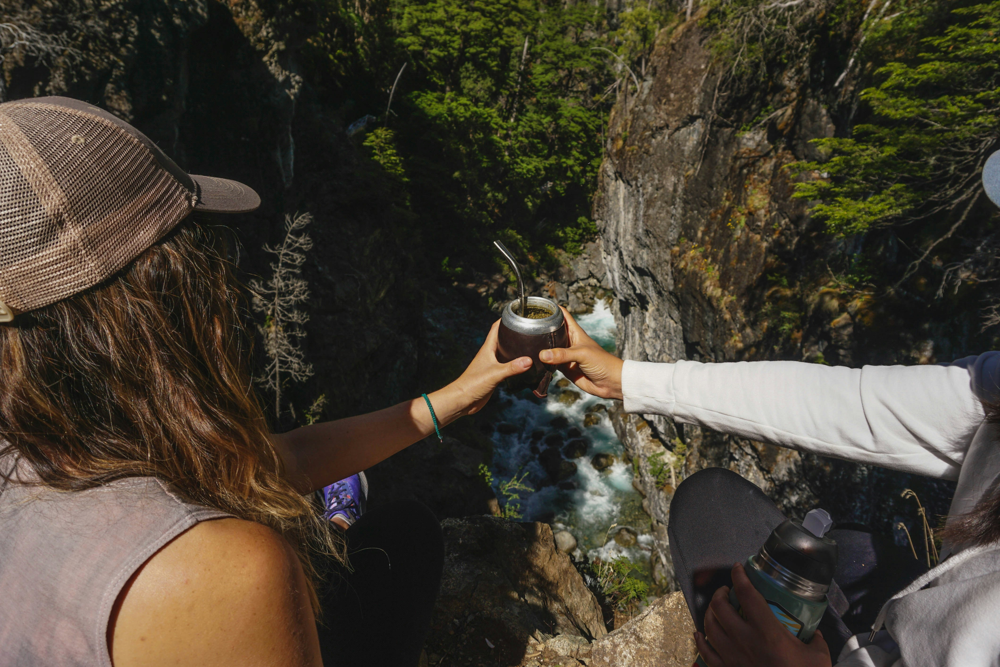

- 
El mate, esa infusión que une a las personas como si fueran imanes. En cada sorbo, se teje una red invisible de complicidad y compañerismo. Es como un ritual secreto: alguien prepara el mate con destreza, cuidando la temperatura y la yerba, y luego lo ofrece a los demás. Es un gesto de hospitalidad y confianza.

El mate, más que una bebida, es un lazo que une corazones y fortalece amistades. En cada mate compartido, se forja un recuerdo, una sonrisa, un vínculo que perdura en el tiempo. Así que, levantemos nuestras calabazas y celebremos la magia del mate, la amistad y el amor.
.jpg)
Las charlas fluyen sin esfuerzo, como si el mate tuviera el poder de derribar las barreras de la conversaciones complicadas. Los temas van desde anécdotas graciosas hasta confesiones profundas, y todo se comparte en un círculo de amistades que saben que pueden ser ellos mismos.

Una costumbre que nos recuerda que la vida está llena de momentos especiales que se disfrutan mejor en buena compañía y con un mate en la mano.